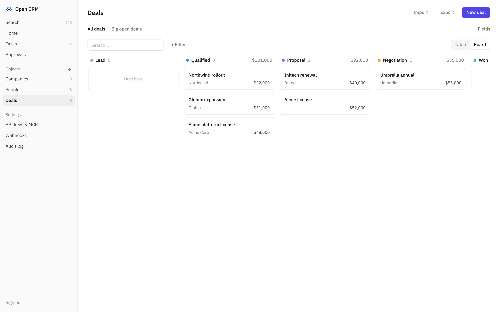

Your server. Your data. Your agents.
Most CRMs are cumbersome: per-seat pricing, a menu for everything, and a data model you have to bend your work around. Open CRM is a small, self-hosted CRM you can run as it is, or fork and build into exactly the CRM you want.

-
Simple
One container and a Postgres database. People, companies, deals, tasks and a timeline, and nothing you didn't ask for. The codebase is small, readable TypeScript you can get your head around in an afternoon.
-
Extensible
Objects and fields are data, not code: add a field or a whole new object from the UI and every table, form and board picks it up. When that's not enough, fork it. There's a REST API, signed webhooks and CSV import/export for everything else.
-
AI-native
A built-in MCP server lets Claude, ChatGPT, Cursor and other agents work in the same records you do. They can even extend the CRM themselves. Every change is attributed and can be undone, and anything destructive waits for your approval.
Use it, or make it yours
Run it as it is and shape it from the UI, or fork it and change anything. All business logic lives in one folder (server/src/core), the API and MCP server are thin layers on top of it, and the UI renders from the schema, so most changes are small and local. It's open source: no license keys, no telemetry, and your data stays in your own Postgres.
Self-host
Open CRM is one Docker container plus Postgres. Migrations run on boot, and the first boot creates People, Companies and Deals.
git clone https://github.com/housewithbricks/open-crm
cd open-crm
cp .env.example .env # set ADMIN_PASSWORD
docker compose up -dOr anywhere Docker runs: Fly.io, Coolify, Dokploy, Portainer, a VPS. See the self-hosting guide.
Connect your agent
Open CRM speaks MCP, so any MCP client can use it. Create a key in Settings → API keys & MCP, then pick your client:
Run once in your terminal:
claude mcp add --transport http open-crm https://your-host/mcp \
--header "Authorization: Bearer ocrm_…"In Claude on the web or desktop: Settings → Connectors → Add custom connector. Connectors take a URL rather than headers, so the key goes in the URL:
https://your-host/mcp?key=ocrm_…Treat this URL like a password, and give each connector its own key.
In ChatGPT, turn on developer mode (Settings → Apps & Connectors → Advanced settings), then create a connector with this URL and No authentication. The key in the URL is the authentication.
https://your-host/mcp?key=ocrm_…On the OpenAI API, add an mcp tool with server_url and an Authorization header instead.
Add to ~/.cursor/mcp.json:
{
"mcpServers": {
"open-crm": {
"url": "https://your-host/mcp",
"headers": { "Authorization": "Bearer ocrm_…" }
}
}
}Add to .vscode/mcp.json for GitHub Copilot agent mode:
{
"servers": {
"open-crm": {
"type": "http",
"url": "https://your-host/mcp",
"headers": { "Authorization": "Bearer ocrm_…" }
}
}
}Point any MCP client at the Streamable HTTP endpoint with the key as a bearer token:
URL https://your-host/mcp
Header Authorization: Bearer ocrm_…If the client only takes a URL, use /mcp?key=ocrm_…. If it only runs local servers, bridge with mcp-remote:
npx -y mcp-remote https://your-host/mcp --header "Authorization:Bearer ocrm_…"Setup for Windsurf, Gemini CLI, Codex, Claude Desktop config files and the OpenAI API is in the guide to connecting agents.